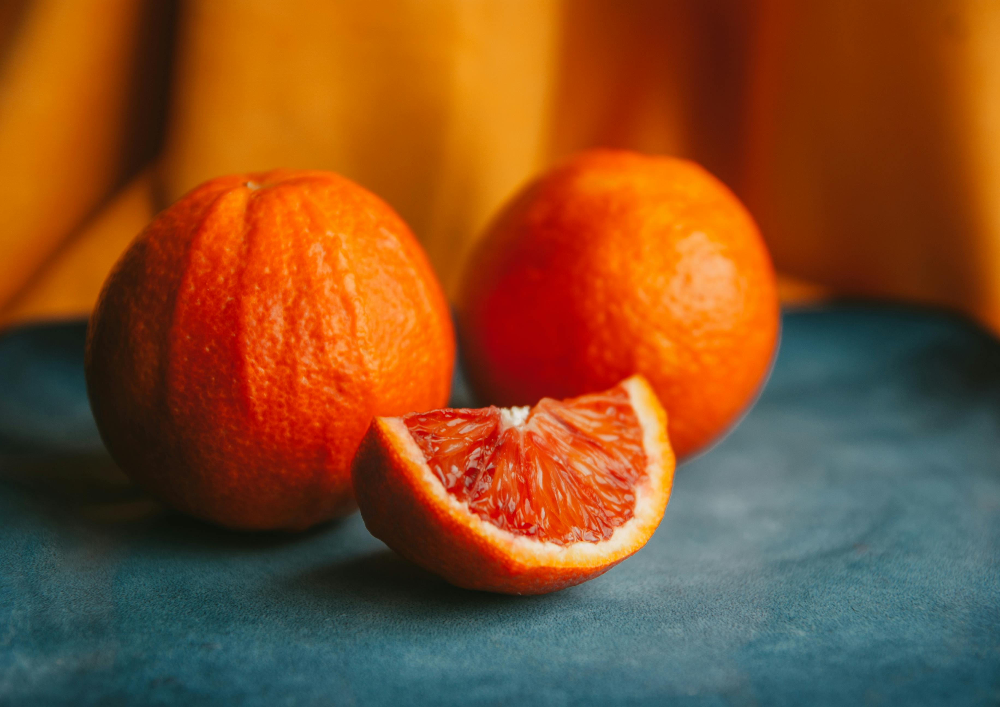

Mango Smoothie

Mangos and bananas have a rich, creamy texture with only barest trace of fat.
That makes them good choices for low-fat shakes. Mangos are available from January
through August. Buy fruit that's got a yellow or reddish-yellow skin.
Ingredients
- 1 can (8 ounces) juice-packed pineapple chunks
- 1 large rip mango, peeled and chopped
- 1 ripe banana sliced
- 1 cup nonfat frozen vanilla yogurt
- crushed or cracked ice
Instructions
- In a blender, combine the pineapple (with juice), mangoes, and bananas.
- Process until smooth.
- Add the frozen yogurt.
- Blend well.
- With the blender running, gradually drop in enough ice to bring the level
up to four cups.
- Blend until ice is pureed
Home